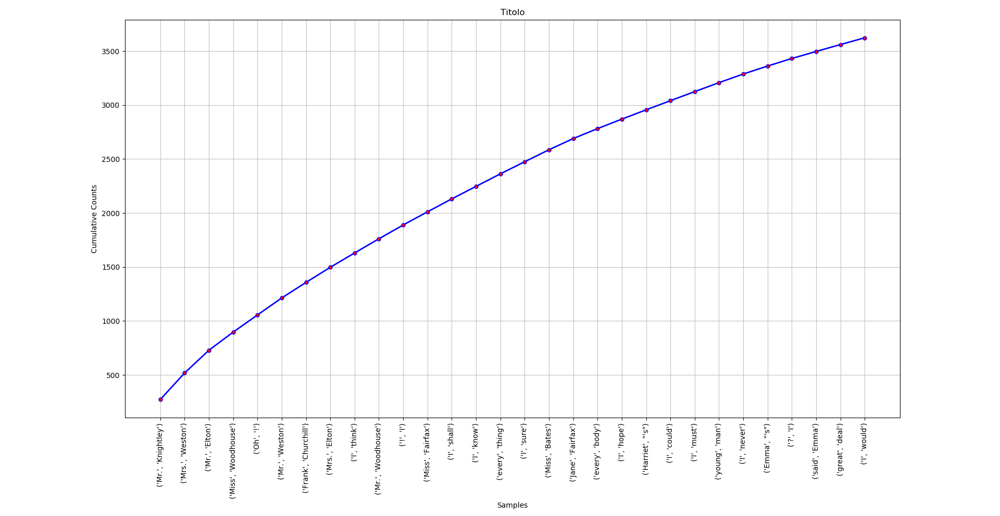

Come Estrarre Ngrams Facilmente
Installando la libreria NLTK per Python3 si possono immediatamente provare molti dei suoi strumenti sui corpora che la libreria stessa fornisce. Il modo più semplice per scaricare e installare i vari moduli e corpora è usando la funzione nltk.download() in uno shell di python oppure con python -m nltk.downloader nel terminale. Tramite il downloader installate i moduli stopwords, punkt e il corpus gutenberg.
Moduli da importare
Per prima cosa si importano i moduli che servono. wordtokenize dividerà il corpus in parole singole, stopwords toglierà dai token raccolti tutti quelli meno utili e che fornirebbero ben poche informazioni (come le parole "but" o "so"). Per finire, ngrams produrrà gli ngram desiderati e con nltk si potranno rappresentare i risultati in un grafico.
from nltk import ngrams from nltk.tokenize import word_tokenize from nltk.corpus import stopwords
Importare il corpus e impostare le stopwords
with open("austen-emma.txt", "r") as corpus: corpus = corpus.read() stop_words = set(stopwords.words('english'))
Tokenizzare
Per prima cosa si tokenizza tutto il testo, producendo una lista di parole singole che contengono sia parole utili che parole meno utili e caratteri come ? o !. Successivamente, utilizzando la variabile precedentemente impostata, si eliminano tutte le stopword con un semplice for loop che inserirà le parole utili in una nuova lista di token filtrati.
tokens = word_tokenize(corpus) filteredTokens = [] ## Togliere le stopwords dai tokens for token in tokens: if token not in stop_words: filteredTokens.append(token)
Ngram
Ora che si è ottenuta la lista di tokens filtrati, utilizzando il modulo ngrams si imposta prima il numero di parole e poi si crea la lista di ngrams.
n = 3 #Numero di ngrams ngrammi = list(ngrams(filteredTokens, n)) fDist = nltk.FreqDist(ngrammi) mostComm = fDist.most_common(30) #I 30 ngrammi più frequenti
Grafici
fDist.plot(30, # I 30 ngrammi più frequenti cumulative=False, # Se mostrare frequenza cumulativa title="Titolo", # Titolo del grafico color="blue", # Colore della linea linestyle='solid', # Tipo di linea (dotted, dashed, ecc...) marker=".", # Punti di riferimento sulla linea markerfacecolor="red", # Colore interno del marker markeredgecolor="blue", # Contorno del marker markersize=10.0) # Dimensione del Marker (float)

Il risultato finale sarà un grafico simile a questo.
Altri oggetti / arguments per il grafico disponibili sono linewidth e alpha. Descrizioni di questi ed altri si possono trovare nella documentazione di Matplotlib.